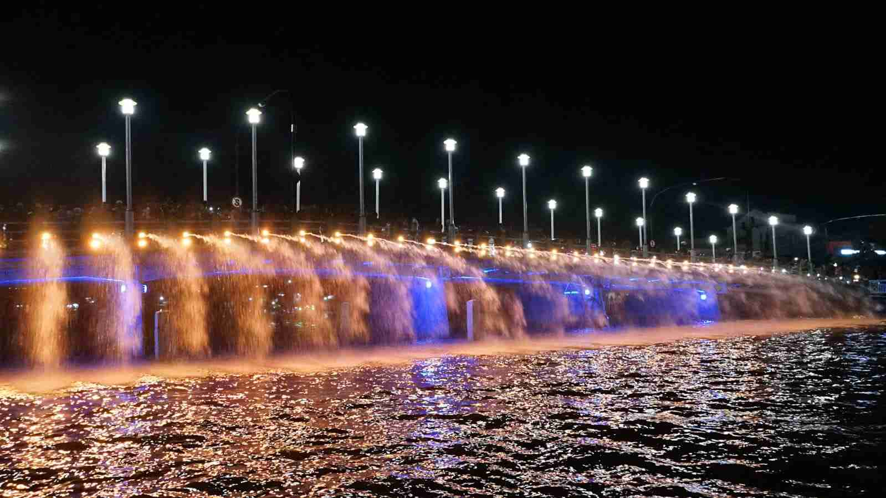
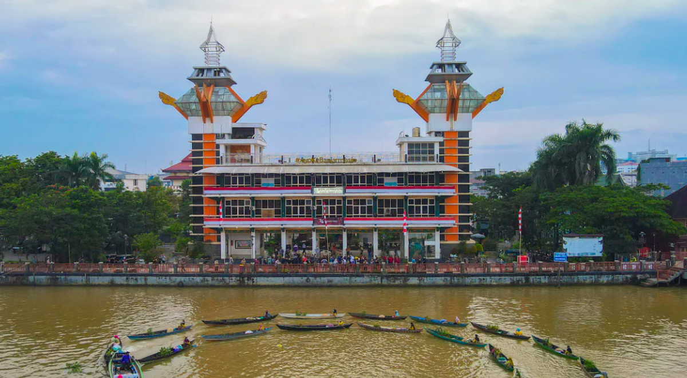
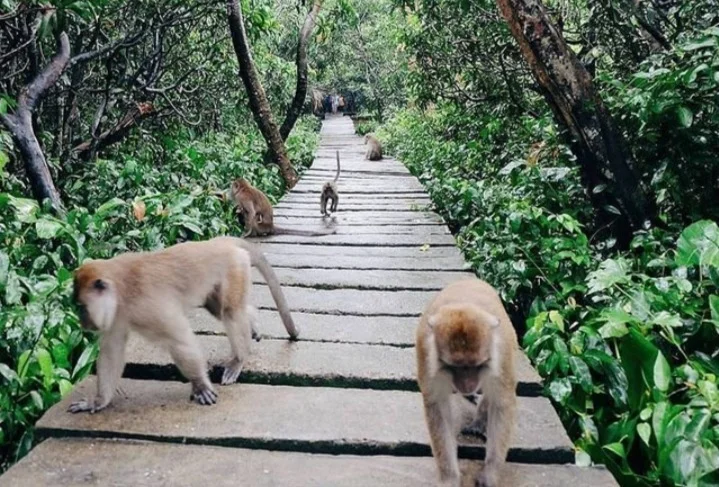

Sungai Martapura
Tempat wisata sungai indah di pusat kota.
Selengkapnya

Menara Pandang
Spot foto terbaik melihat kota dari atas.
Selengkapnya

Pulau Kembang
Pulau dengan habitat monyet ekor panjang.
Selengkapnya

Patung Tugu Bekantan
Tugu ikonik yang berada di Kota Banjarmasin.
Selengkapnya